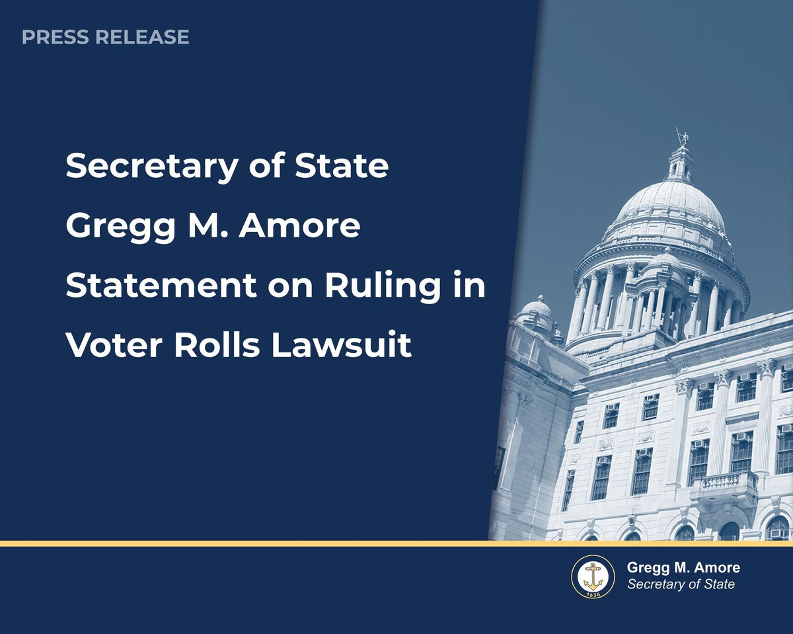
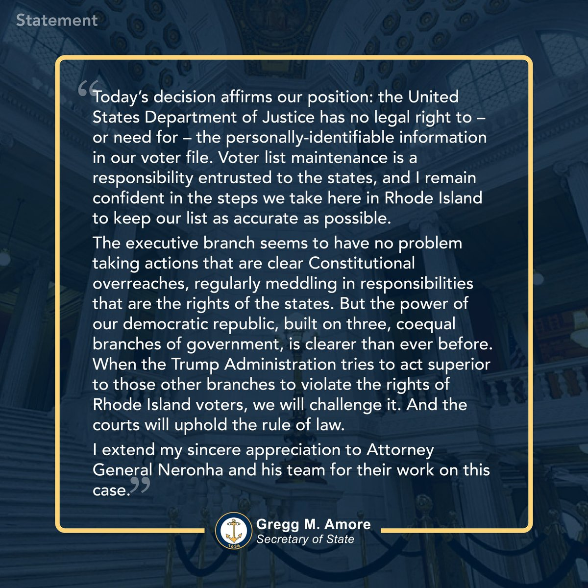
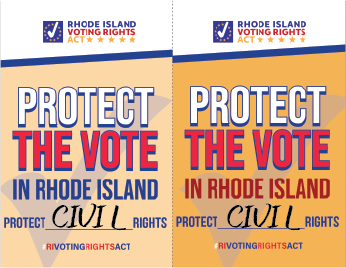

NEWS and NOTES Newsletter
Subscribe to our monthly newsletter for League activities, voter information, and civic engagement opportunities.
Subscribe →
News from LWV Newport County

Breaking Victory • April 17, 2026
Federal Judge in Rhode Island Dismisses DOJ Attempt to Seize Rhode Islanders' Voter Data
Agreeing with arguments we made in court in March, U.S. District Court Judge Mary McElroy dismissed the U.S. Department of Justice's attempt to obtain Rhode Islanders' sensitive voter data — including driver's license numbers and partial Social Security numbers. This is a huge win for data privacy and voters' rights.
At the hearing, the DOJ's attorney failed to justify why the department needed this information, and acknowledged that the data would be shared with the Department of Homeland Security. Providing the data could also be used to create an unauthorized national voter database, and would be more vulnerable to hackers.
Judge McElroy called the DOJ request a "fishing expedition" that federal law does not permit. Secretary of State Gregg M. Amore praised the ruling, calling recent DOJ demands "clear Constitutional overreaches."

Secretary of State Gregg M. Amore's full statement on the ruling.
2026
2026 Candidate Forums & Election Calendar
The League of Women Voters of Newport County will host nonpartisan candidate forums across all six communities ahead of the 2026 elections — the State Primary on September 9 and the General Election on November 3. The full forum schedule, key voting dates, and who's running are now on our Elections 2026 hub.
Visit the Elections 2026 hub →
News from LWV Rhode Island
Voting Rights • July 10, 2026
Secretary of State Amore Pushes Back on DOJ "Intimidation Letter" Over Rhode Island's Voter Rolls
Rhode Island Secretary of State Gregg M. Amore announced that he received a July 7 letter from the U.S. Department of Justice regarding compliance with federal voting laws — a letter he characterized as an intimidation tactic rather than a genuine offer of assistance. "The actions of this Administration are intended to undermine your trust in our elections processes. This is unacceptable," Amore said.
The Secretary detailed how Rhode Island already maintains accurate voter rolls: the state conducts regular voter list maintenance, including a statewide mailing in November 2025 — the first in over a decade — participates in information-sharing through the Electronic Registration Information Center (ERIC), and requires every voter to attest to their citizenship under penalty of perjury when registering.
This letter follows the Justice Department's failed attempt to seize Rhode Islanders' sensitive voter data, which a federal judge dismissed in April — a case in which the League of Women Voters helped make the winning arguments in court. Amore encourages Rhode Islanders with questions about elections to contact their state and local election officials directly, and invites anyone with actual evidence of voter fraud to report it to his office. Trusted voting information is always available at vote.sos.ri.gov.
Read More →

Advocacy Update • July 10, 2026
General Assembly Adjourns Without Passing the Rhode Island Voting Rights Act
The Rhode Island General Assembly ended its 2026 session without passing the Rhode Island Voting Rights Act (H 8334 / S 3143). Both bills were "held for further study" in committee — the Senate Judiciary Committee on April 7 and the House State Government & Elections Committee on April 16 — and never received a floor vote.
The RIVRA, sponsored by Representative Katherine Kazarian and Senate President Valarie J. Lawson, would codify the protections of the federal Voting Rights Act of 1965 into Rhode Island law, shielding voters here from federal rollbacks. It would protect Rhode Islanders against vote dilution, voter suppression, and voter intimidation, expand language access, and strengthen transparency and accountability in our elections.
The League of Women Voters of Rhode Island testified in strong support of the bill. "The U.S. Supreme Court has weakened key provisions of the landmark 1965 Voting Rights Act. Congress has failed to act. Federal enforcement has diminished. In this moment, states must lead," wrote LWVRI President Gene Thompson-Grove of Newport in testimony to the Senate Judiciary Committee. The League stands with a broad coalition — including the ACLU of Rhode Island, Common Cause Rhode Island, and The Womxn Project — in urging the General Assembly to pass the RIVRA when it reconvenes.
Visit our Action Alerts page to learn how to tell your legislators that Rhode Island voters expect this bill to become law.
Read More →
News from LWV United States
Breaking Victory • June 29, 2026
WIN! Supreme Court Protects Mail Voting and Preserves States' Authority Over Ballot Receipt Rules
Today, the Supreme Court issued a decision upholding voters' rights and permitting Mississippi voters' ballots that are cast on time to be counted after Election Day according to state law.
The decision reverses the Fifth Circuit's incorrect interpretation of federal Election Day statutes, which would have invalidated decades-old absentee ballot receipt laws and disenfranchised voters who followed all election rules but faced postal delays beyond their control.
"The League celebrates today's Court ruling, which upholds a state's authority to administer its own elections free from federal interference, including determining when validly cast mail ballots are counted," said Celina Stewart, CEO of the League of Women Voters. "As we look toward the 2026 midterm elections, the League will continue working in communities across the country to ensure every eligible voter has the information, resources, and confidence to cast their ballot."
Read More →
Press Release • LWVUS
League of Women Voters Announces Full Slate of LWVEF Trustees
Read Full Statement →
Press Release • LWVUS
League of Women Voters, Campaign Legal Center Celebrate Victory as Court Blocks USCIS Rule
Read Full Statement →
Press Release • LWVUS
League of Women Voters Expands Investment in State and Local Leagues Following Record Year of Democracy Impact
Read Full Statement →
Press Release • LWVUS
In a Victory for Voting Rights, Federal Court Dismisses DOJ’s Attempt to Access NJ Voter Rolls After Civil Rights Groups, NJ Voters Filed Motion to Protect Voters’ Privacy
Read Full Statement →
Press Release • LWVUS
League of Women Voters Responds to DC Circuit Court Ruling on Mail Voting Executive Order
Read Full Statement →
Updated automatically from the LWVUS newsroom on August 07, 2026.
View all press releases from LWV United States →